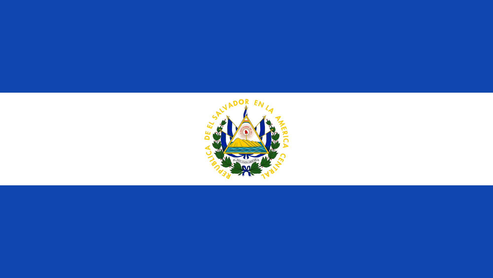

El Salvador
El Salvador, oficialmente República de El Salvador, es un país soberano de América Central ubicado en el litoral del océano Pacífico con una extensión territorial de 21 041 km2. Leer más
El Salvador, oficialmente República de El Salvador, es un país soberano de América Central ubicado en el litoral del océano Pacífico con una extensión territorial de 21 041 km2. Leer más
Guatemala —oficialmente, República de Guatemala— es un Estado soberano situado en América Central, en su extremo noroccidental, con una amplia cultura autóctona producto de la herencia maya y la influencia castellana durante la época colonial. Leer más
Honduras es un país de América, ubicado en el centro-norte de América Central. Su nombre oficial es República de Honduras y su capital es el Distrito Central, formado por las ciudades de Tegucigalpa y Comayagüela. Leer más
Nicaragua, oficialmente República de Nicaragua, es un país de América ubicado en el istmo centroamericano. Leer más
Costa Rica, denominada oficialmente República de Costa Rica, es un país de Centroamérica. Su territorio, con un área total de 51 100 km2, limita con Nicaragua al norte, el mar Caribe al este, Panamá al sureste y el océano Pacífico al oeste. Leer más